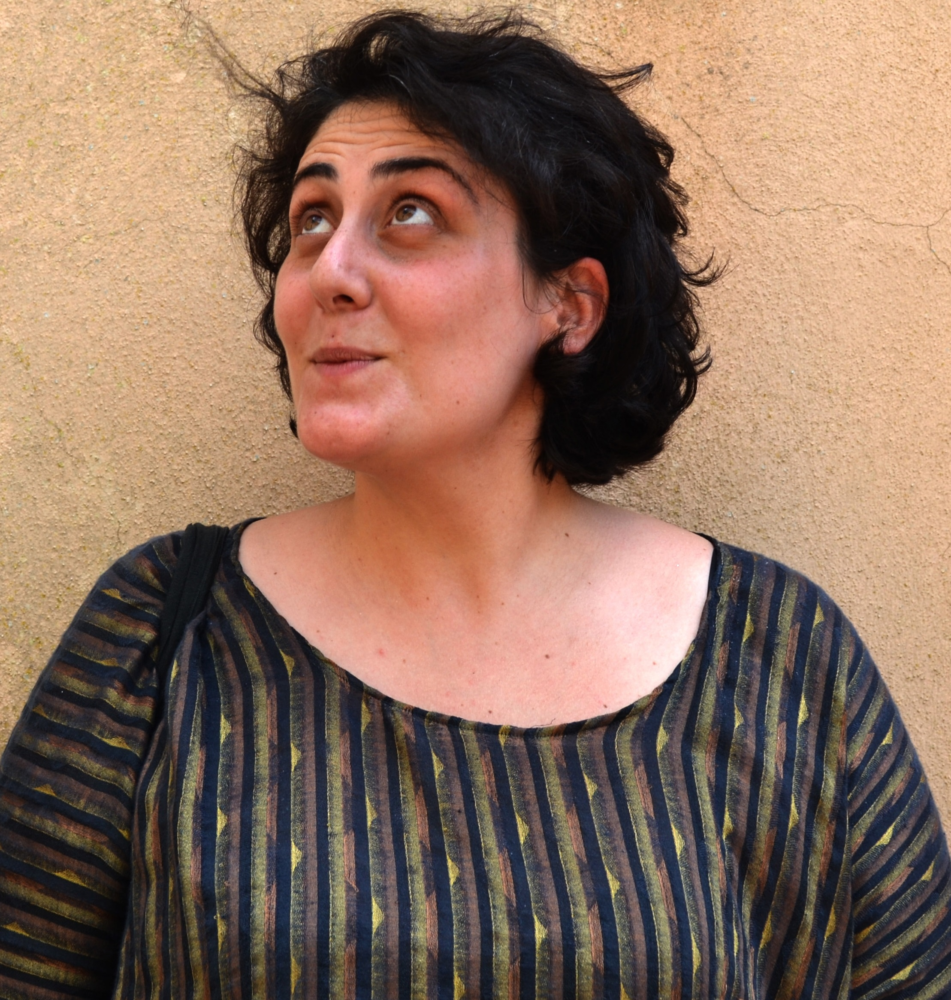
Seppie Co-founder/ Coordinator
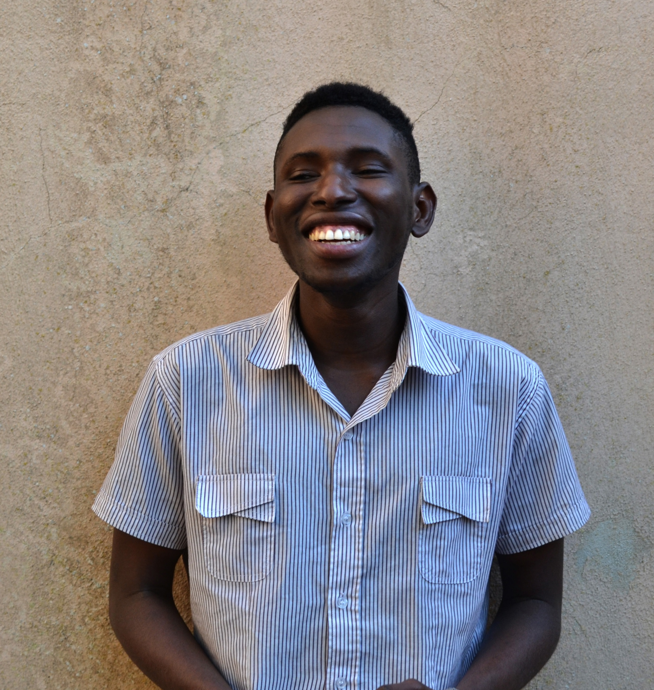
Websites Developer
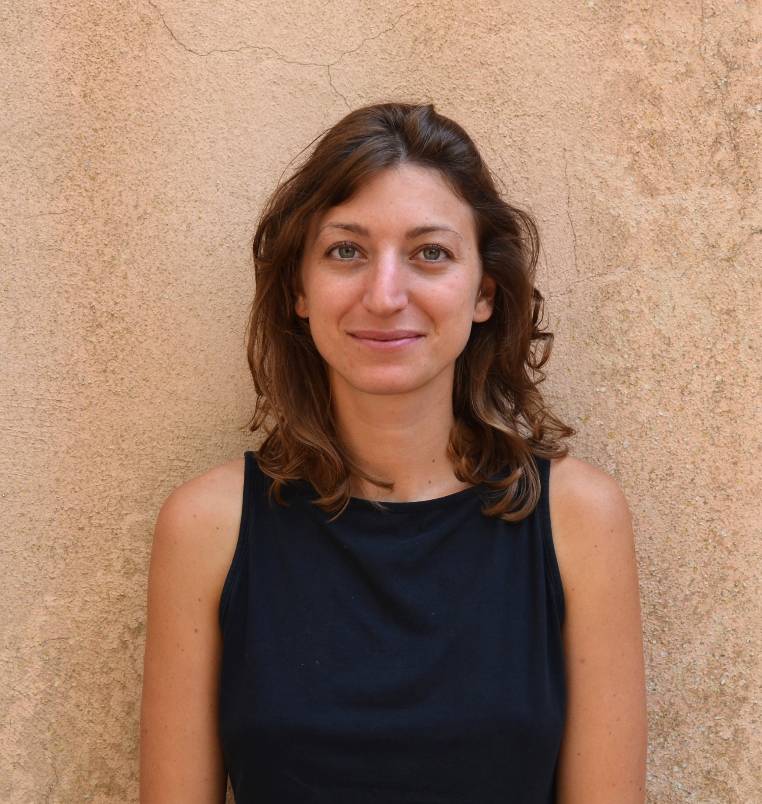
Visual Antropologist/ Director
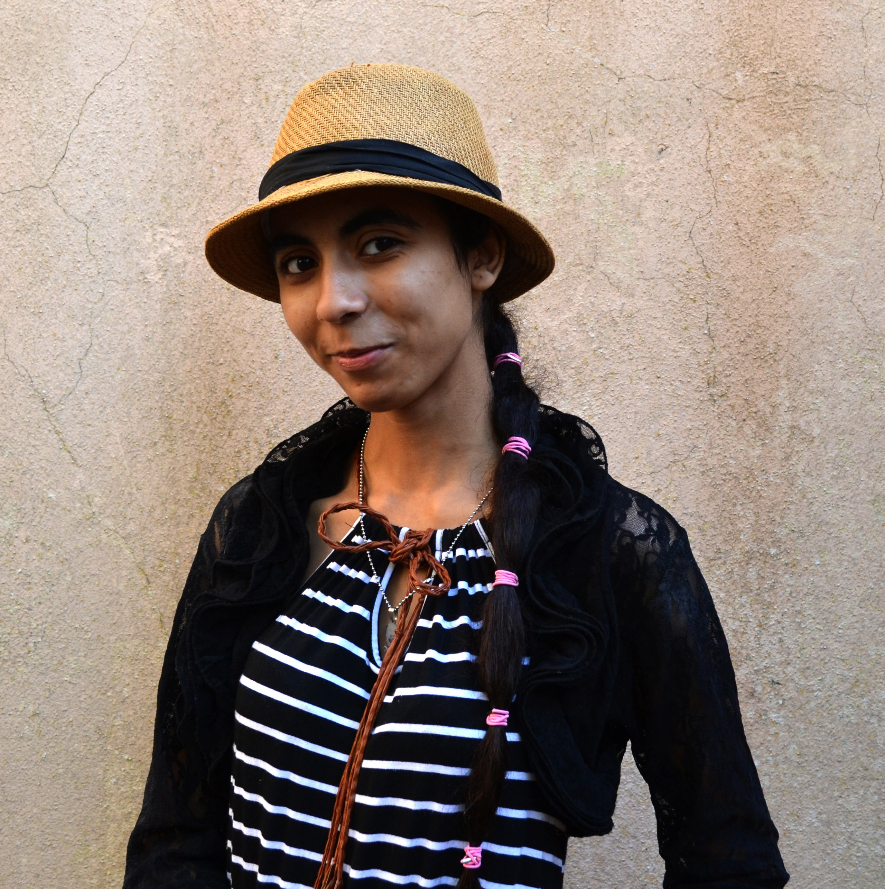
Writer/ Actress
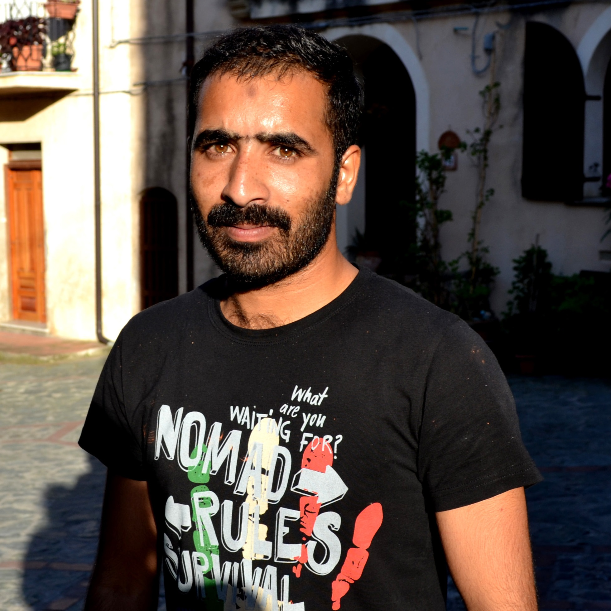
Workshop Participant
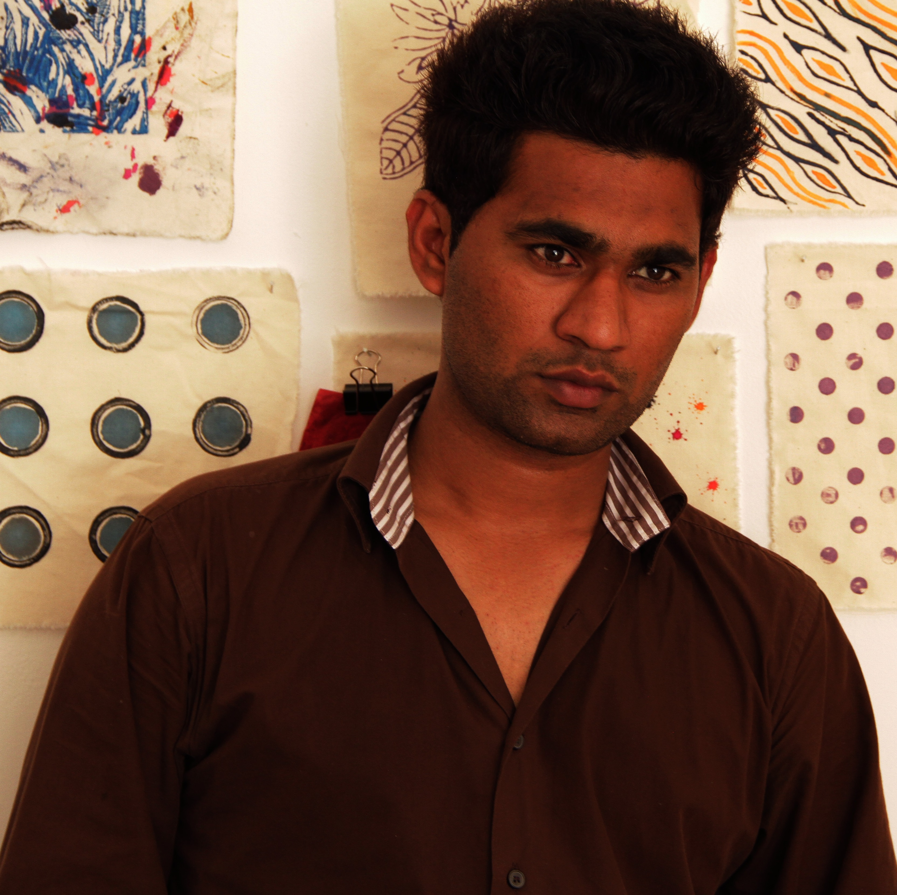
Assistant Director/Photographer
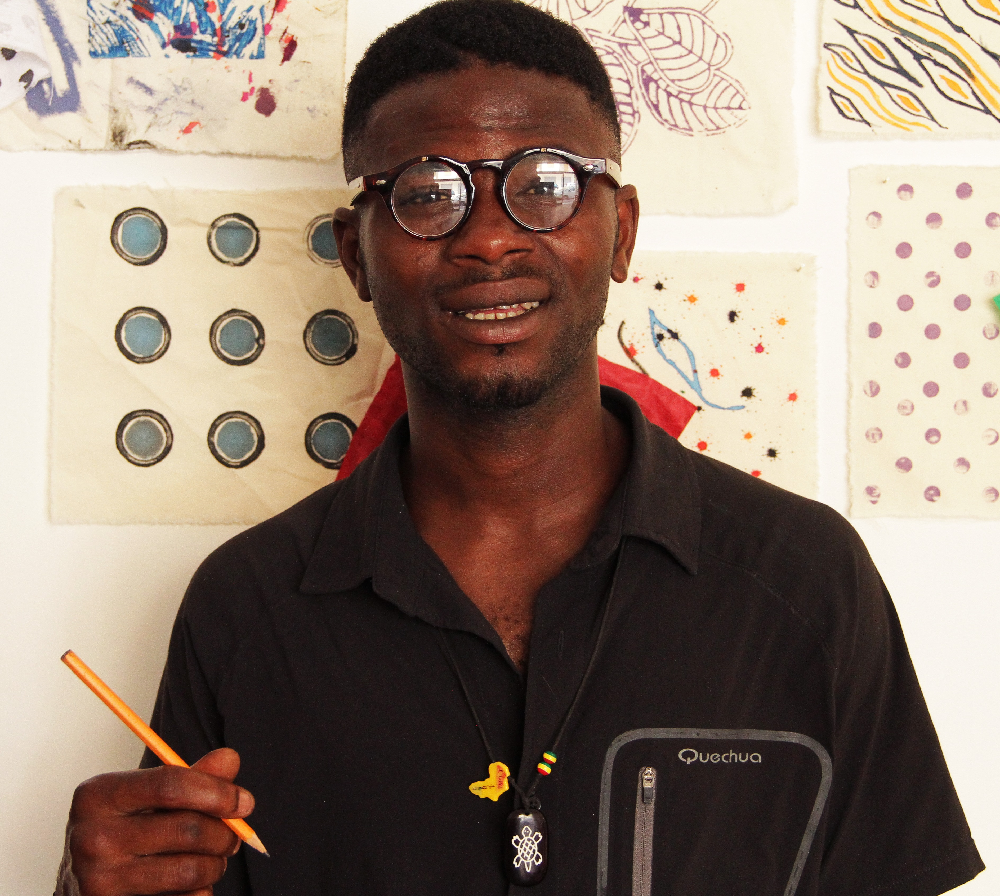
sound technician/Disc Jockey DJ
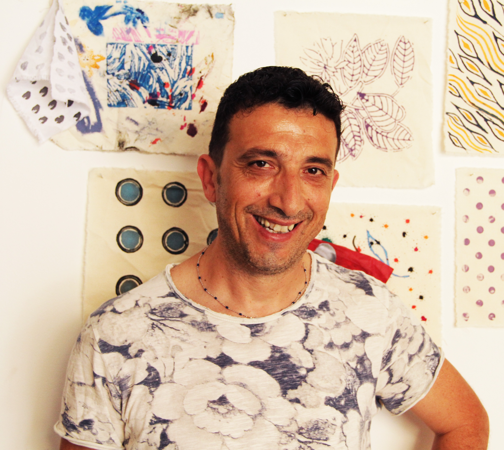
Supporter
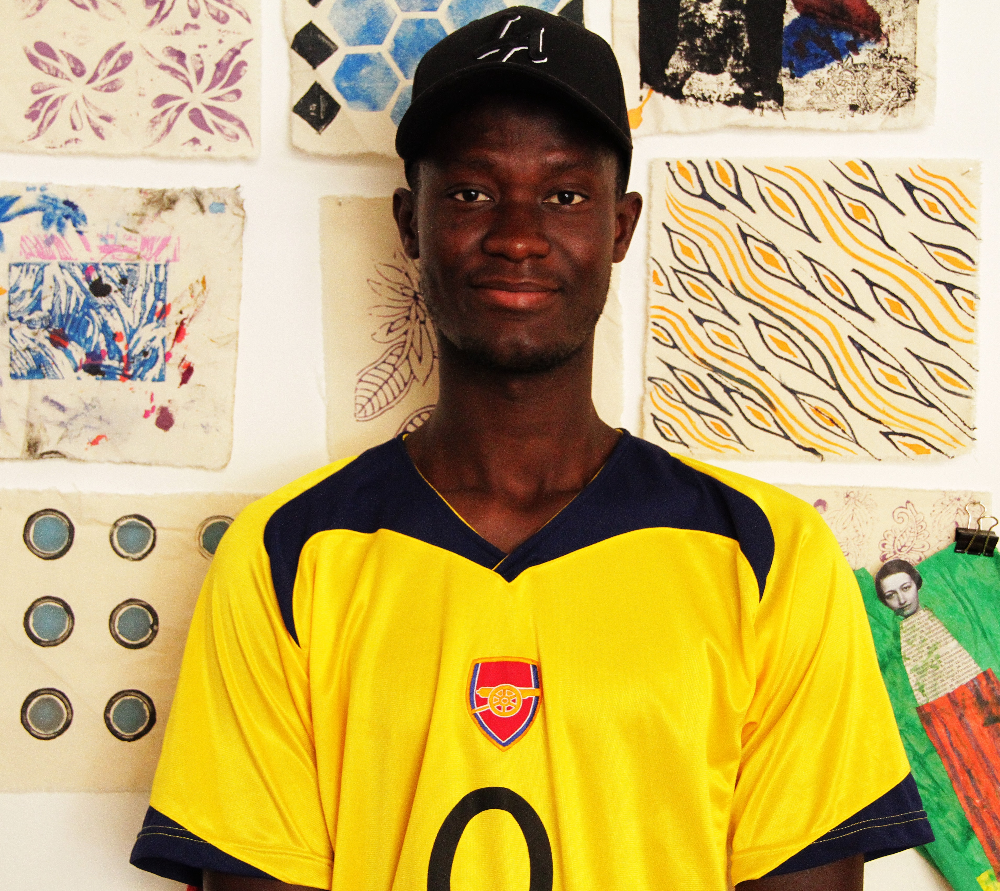
Workshop Participant
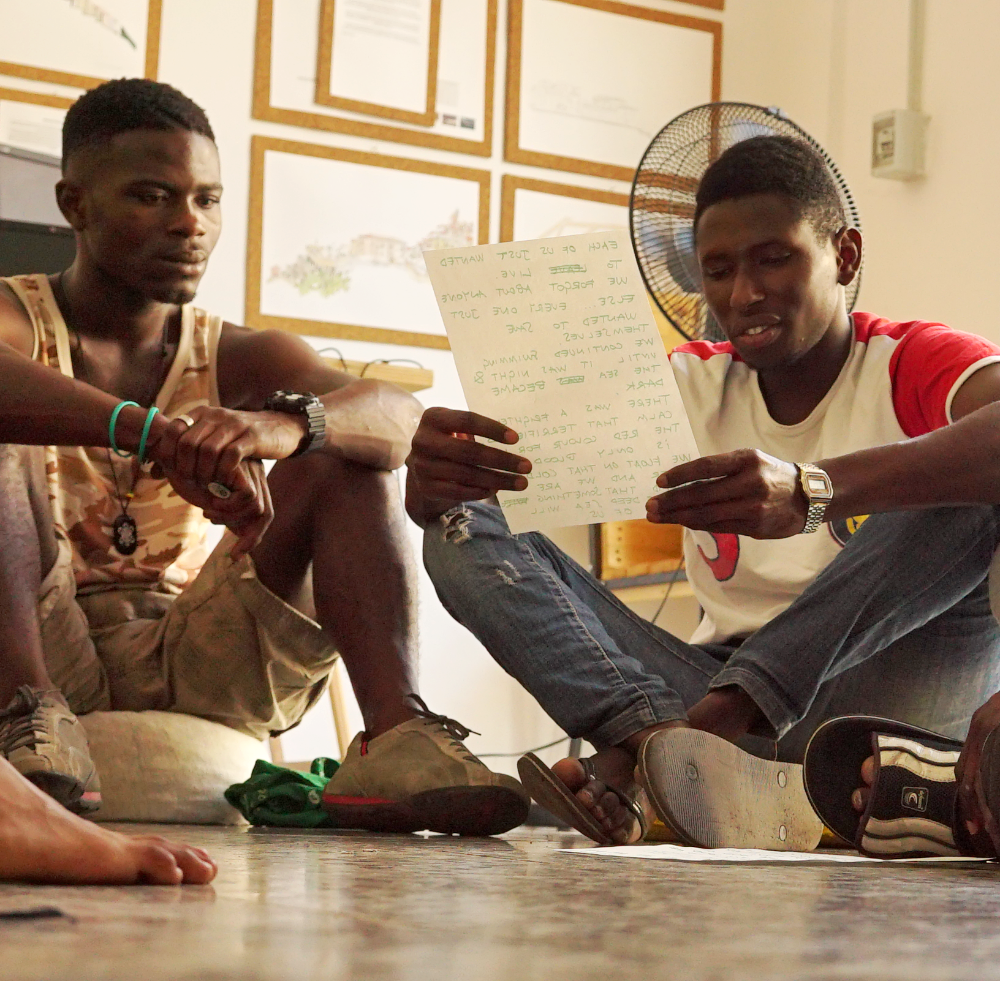
I am writing the following after reading an interview to Carolyn Strachan and Alessandro Cavadini, the filmmakers who produced films in collaboration with Australian Aboriginal communities in the 70’s and 80’s. I just started a film in Amantea (Calabria) with the help of Alasan and Omar from Gambia, Rita from Italy, Safa from Libya, Freeborn, Jerry and Precious from Nigeria and Lucky and Zeshan from Pakistan. I believe the final outcome will be strongly influenced by the dynamics of the multi-ethnic community who worked on the project together. I say “I just started…with the help of” because our work was not strictly and purely community film-making. The people that worked with me in Amantea did not ask me to make a film with them and for them as the Australian Aboriginal communities did with Cavadini and Strachan. I (desperately) asked them to help me. The film will be the final project for my graduation. About them and their stories. Thanks to them, to their help.
Some of the participants fell asleep or constantly looked at their phones, but others demonstrated to be extremely interested and open-minded. They asked to watch more, they were not dispirited by images of fellow migrants being searched and filed by Italian police, they carefully analysed themes and meanings behind scenes. They were inspired by Mikhail Kalatozov’s Soy Cuba for its sounds, for its delivery of oppression, by Patricio Guzman’s Nostalgia for the Light for its contrasts and spine-chilling tragedy.
After a very successful first day as a cinema facilitator, I was looking forward to day 2: the day we had to decide the script for the film.
I remembered some theatre classes I attended around 10 years ago and improvised some meditation and breathing exercises.
When we all tuned in, I asked the participants what style they liked in the films we watched the day before. Four of them answered clearly: Safa liked the contrast between sky and land in Nostalgia for the Light, Zeshan liked the final scene about friendship and struggle in Ico Costa’s short Nyo Vweta Naft, Freeborn liked the description of injustice and oppression in Soy Cuba, Jerry liked the signs and symbols in L’Opera Mouffe.
We then wrote down some subjects and themes we were all interested in and which we could use in the film.
The sea, the silence, racism, integration, hope and depression, feelings, sounds, colours.
I ended up writing two full poster-size sheets of meaningful words.
Then we decided we wanted to tell separate stories, following the style of Soy Cuba. I don’t remember how democratic all these choices were. They allowed me to hold some authority…
I took advice and suggestions when I agreed with them, and rejected and ignored proposals I did not personally like and that seemed too ambitious to produce in the limited time we had.
Stronger personalities within the group influenced choices: some of the participants (myself included) were louder in expressing their preferences and opinions, and they obtained to have their likes represented.
Some participants who are less fluent in English (the language we all spoke) or that have milder opinions and quieter characters ended up not having central roles in the decisions and in the representation. Some people who didn’t have a strong voice during the discussion did not come back the day after.
At the end of day 2, we had four stories that were born out of collective discussions but that were always approved or changed by me. “We are in a democracy” I said on the first day “But I am the queen”.
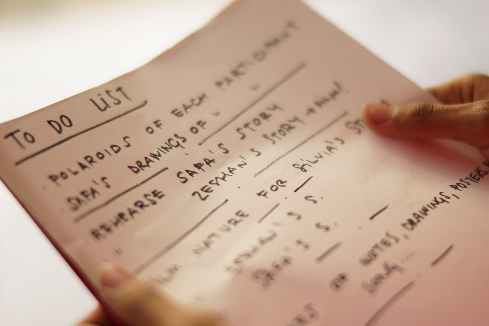
When I took out my camera it was really hard to let go of it. In fact, I didn’t. I asked Zeshan and Jerry to take care of the sound, I gave a borrowed GoPro to anyone who seemed interested in filming what we were doing, but I kept my Sony glued to my hands. I knew we were learning and working all together and creating beautiful and long-lasting relationships, but I also knew my goal was to make a 20’ film for my graduation and that the two days of filming I had to achieve this did not allow enough time to teach exhaustively about camera operations. I couldn’t take any risks.
Therefore, I myself directed and filmed, Zeshan and Jerry recorded sound, Freeborn, Zeshan, Jerry, Safa and Precious acted, the other assisted in every little task, Alasan made a website about what we were doing (is this text on that website now?), Zeshan took pictures of us.
The first story I filmed was Freeborn’s: a reproduction of something that really happened to him, a story about hope for integration and work and the frustration given by encountered racism.
The second story was Jerry’s; an improvised conversation between Libyan Safa and Nigerians Jerry and Precious. We all went by the sea, the sea where they struggled, the embodiment of life and death, the door to Europe or to death. The three actors naturally argued about their experiences of Libya, surrounded by the sea, the moon and a visible though distant lightning storm.
The third story was signed by Zeshan. He chose his favourite place as filming location, we went next to the ruins of an ancient church on top of a hill. We had decided the story was a scripted conversation between two friends who were smoking while looking at the sea.
“The sea looks calm now…” it starts. The subjects are past, nostalgia, sea, dreams, hope and frustration, documents…
The fourth and last story we filmed was Safa’s. She wrote it completely by herself. That’s what she likes to do: she draws and writes horror stories.
It was the fourth and final day of our workshop, we had worked really hard every day, it was 10PM, it was hot and we were tired and dehydrated.
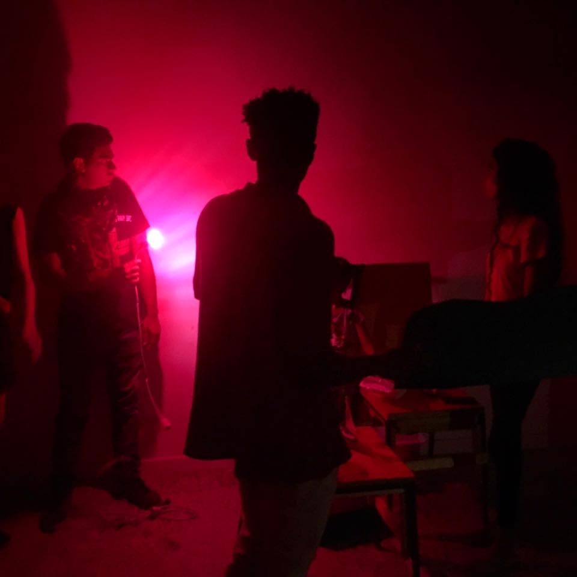
There almost was a revolution!!! People wanted to leave, they started arguing, we all shouted.
After a couple of wrong rehearsals, Rita brought pizzas, beers and coke and after a well-needed break, we managed to get a good take.
Safa’s story had to be horror (obviously!), it involves chaos and calm, sounds and silence, life and death. She wrote about a shipwreck and we filmed shadows on a wall while she was reciting in Arabic. Everybody helped, one holding a light, others holding cardboard shapes,…The day after (Friday) we all met to tidy up the lab, have lunch together, say arrivederci. On that day I managed to let go of my camera. I gave it to Zeshan, he filmed us giving feedback on the past days while Jerry was on sound…
-- I am reminiscing about our workshop in Amantea while trying to write a dissertation on collaborative filmmaking that is due in 26 days. I know that at the very same time, in Amantea, Freeborn, Jerry, Rita, Safa and Zeshan are producing a hip-hop song that they started while I was there, every time I was turning around and letting go of the reins…
I still haven’t had the time to look at the footage we took but I am certainly very satisfied of the process. We learnt to learn together. We learnt about cinema, production, narrative, relationships, each others’ dreams…
I don’t know what the final film will look like yet. I know I will include the portraits Safa made of us in the credits. I know I will show my edit to my collaborators and friends for advice and approval.
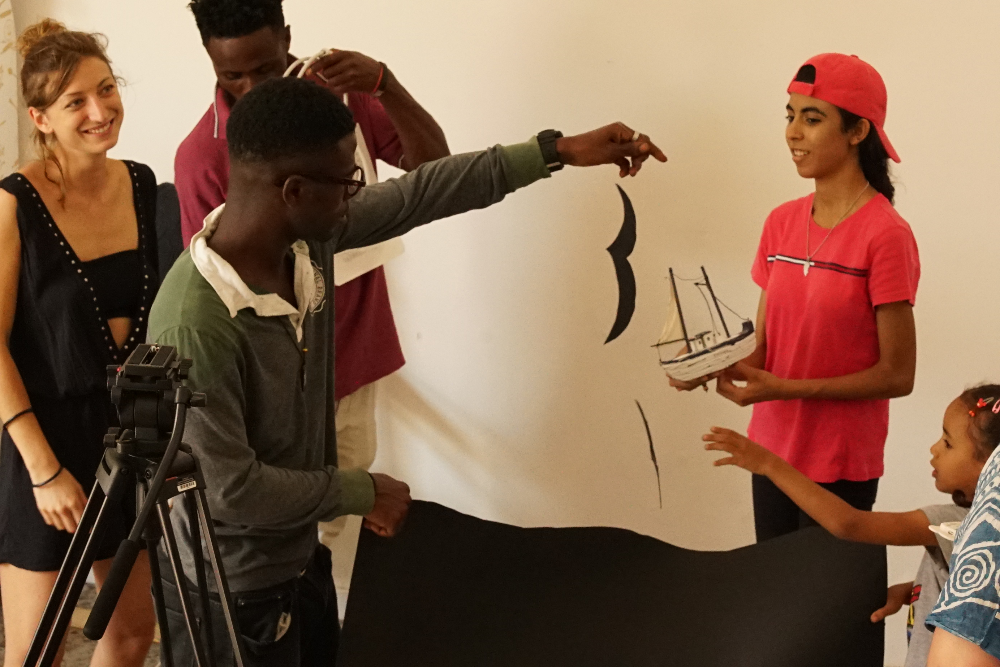
They asked me when they will see the film. I said “never”.
“When are you coming back?”
“Never.”
(Needless to say that’s a joke)
Rita and I are planning a public screening event at Le Seppie lab in Amantea in October and in Palermo during Manifesta 2018.
See you there!
Silvia Gin